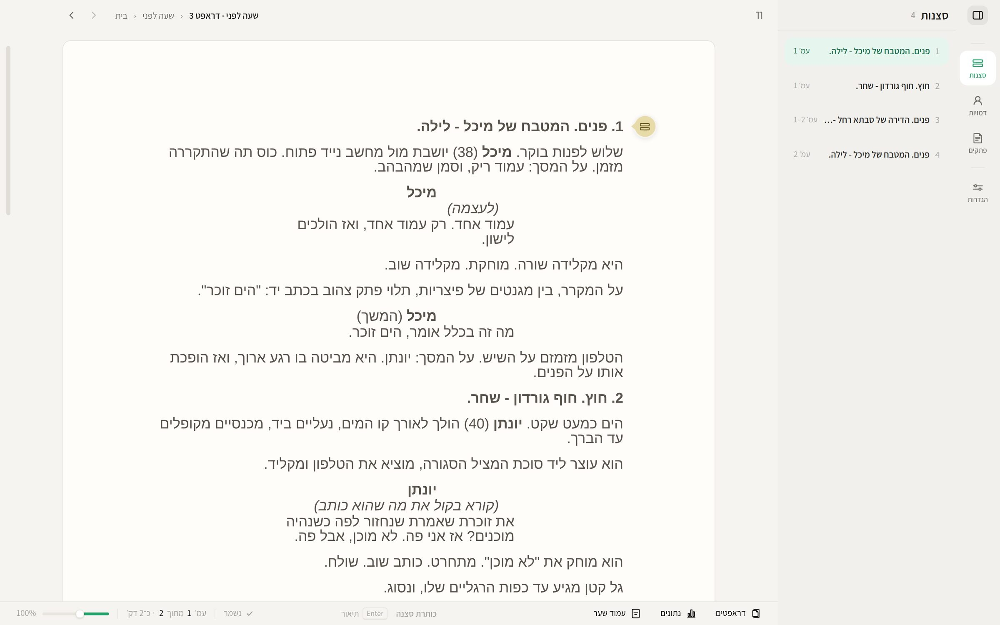
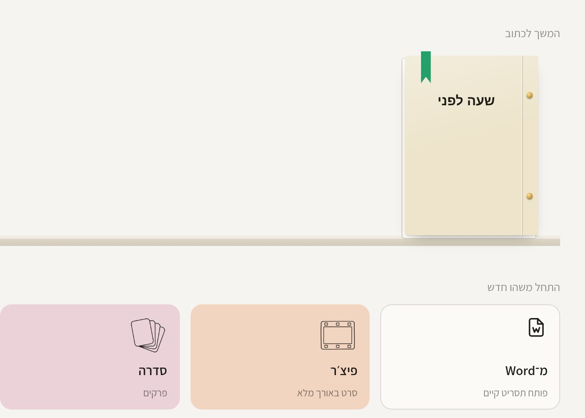
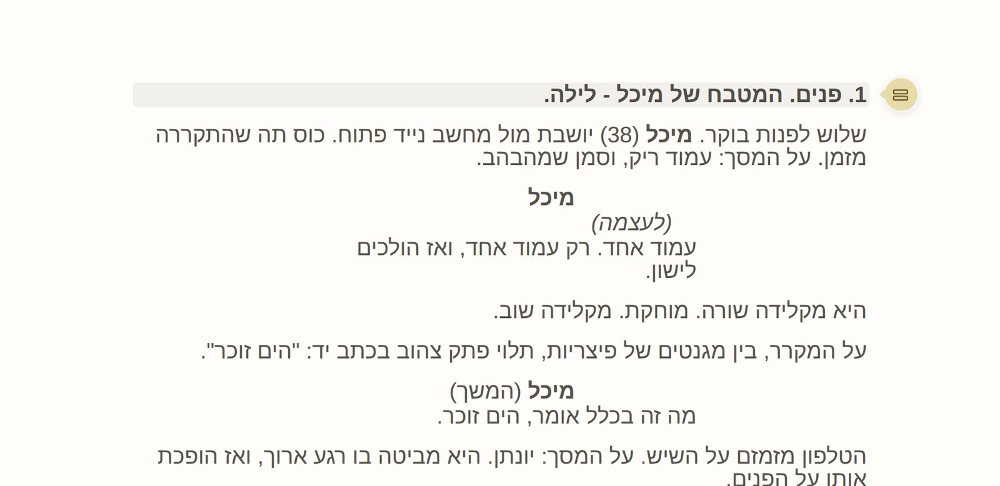
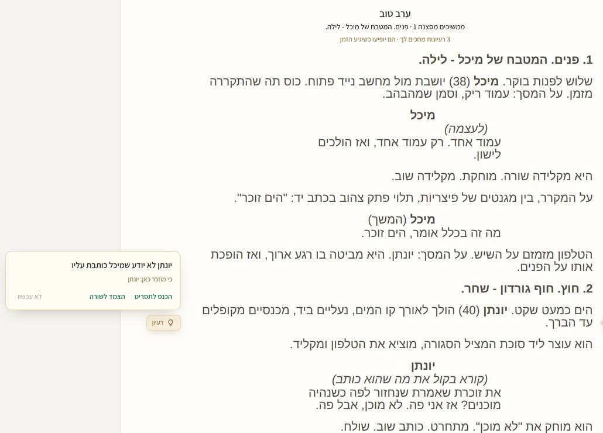

עברית קודם כול
מימין לשמאל בכל מסך, מספרים שלא מתהפכים, ובדיקת איות בעברית. לא תוספת לתוכנה באנגלית.
Wonder היא תוכנת תסריטאות בעברית, שנכתבה על ידי תסריטאים בשביל תסריטאים. התסריט שכתבת ב־Word בא איתך, העמוד נראה כמו שהתעשייה מצפה, ושום דבר לא הולך לאיבוד.
חינם בתקופת הבטא. ממלאים טופס קצר, ומקבלים את ההורדה. איך מתקינים

עוברים בלי לאבד כלום
מעבר לתוכנה חדשה מפחיד. לכן Wonder בנויה כך שמה שאתם רגילים אליו ממשיך לעבוד, ומה שכתבתם בא איתכם.
גוררים את קובץ ה־Word לתוך Wonder. היא מזהה לבד מה כותרת סצנה, מה שם דמות ומה דיאלוג.

Final Draft נבנה סביב אנגלית. Wonder עובדת לפי אותם כללים, ונבנתה מהיסוד לעברית מימין לשמאל.

מבלגן לסדר
בכתיבה יש הרבה יותר רעיונות מאשר מקום לשים אותם. Wonder נותנת להם מקום, בלי לצאת מהשורה שאתם כותבים.
צירוף מקשים אחד (⌘⇧N ב־Mac, Ctrl+Shift+N ב־Windows) פותח שורה לרעיון. Enter, והסמן חוזר בדיוק לאן שהיה.
הפתק שומר את הסצנה והשורה שבהן נכתב, ולחיצה עליו מחזירה אתכם לשם.
כשדמות או מקום שהרעיון מזכיר מגיעים לסצנה, הרעיון מופיע בשקט בשוליים של הדף, ונעלם בהקשה הבאה.

מימין לשמאל בכל מסך, מספרים שלא מתהפכים, ובדיקת איות בעברית. לא תוספת לתוכנה באנגלית.
עמוד שנשבר נכון, שם דמות שלא נשאר לבד בתחתית, ו־(המשך) במקום הנכון. מה שרואים על המסך הוא מה שיודפס.
ייצוא לשליחה להפקה, לקרן או לחבר, עם עמוד שער ומספרי סצנות.
תסריט קיים נכנס בגרירה אחת, עם סוגי השורות מזוהים. מה שלא ברור מסומן לבדיקה, לא נמחק.
כשתצא הגרסה בתשלום, תהיה תקופת ניסיון לפני שמשלמים. נודיע מראש, בתוך התוכנה.
Wonder חתומה ומאושרת על ידי Apple, ולכן לא אמורה להופיע שום אזהרה:
אם בכל זאת מופיעה הודעה, כתבו לנו ונעזור.
גרסת ה־Windows מגיעה דרך חנות Microsoft Store: התקנה בלחיצה אחת, כמו כל אפליקציה אחרת מהחנות.
ברגע שהיא מופיעה בחנות, נשלח את הקישור במייל לכל מי שנרשם לבטא. אפשר להירשם כבר עכשיו.
התסריטים נשמרים אצלך במחשב, בתיקייה שבחרת, ואין צורך בחשבון או בהתחברות. תסריט יוצא מהמחשב רק כשאתה בוחר בכך במפורש, למשל כששולחים אותו לקריאה או מבקשים תרגום.
פעם ביום התוכנה בודקת אם יש גרסה חדשה. הבדיקה לא שולחת שום דבר מהתסריטים. הפרטים המלאים במדיניות הפרטיות.
כל פרויקט הוא קובץ אחד עם הסיומת .wonder, שמחזיק את התסריטים, הטיוטות, הדמויות והפתקים. אפשר להעתיק אותו, לגבות אותו ולשלוח אותו כמו כל קובץ.
וכדי שלעולם לא תהיו תלויים בנו: ייצוא ל־PDF ול־Word זמין תמיד.
כן. גוררים קובץ .fdx לתוך Wonder, או בוחרים ״פתח תסריט קיים…״. סוגי השורות, הדיאלוג הכפול, עמוד השער וה־ScriptNotes עוברים איתו. גם קובצי Fountain נפתחים, ואפשר תמיד לייצא בחזרה ל־.fdx.
Mac עם macOS 11 ומעלה, גם עם מעבד Apple וגם עם Intel. Windows 10 ו־11, 64 ביט. לא צריך חיבור לאינטרנט כדי לכתוב.
כותבים לנו ל־support@wonder-pages.com ומקבלים תשובה בעברית. את התשובות כותב עוזר אוטומטי (בינה מלאכותית), ומה שדורש אדם עובר אל אמיר קיפר, מפעיל וונדר. אם אפשר, צרפו צילום מסך ואת מספר הגרסה.